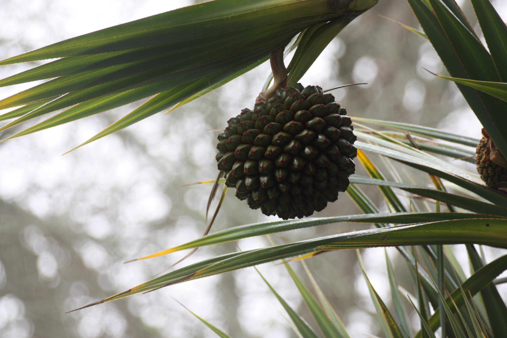
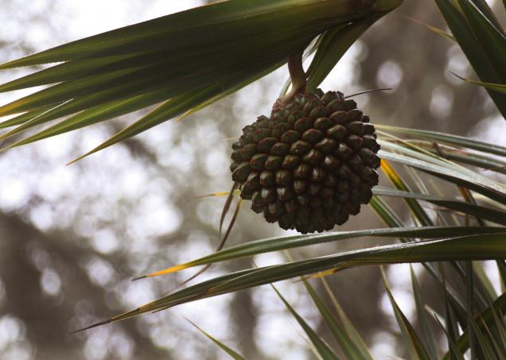
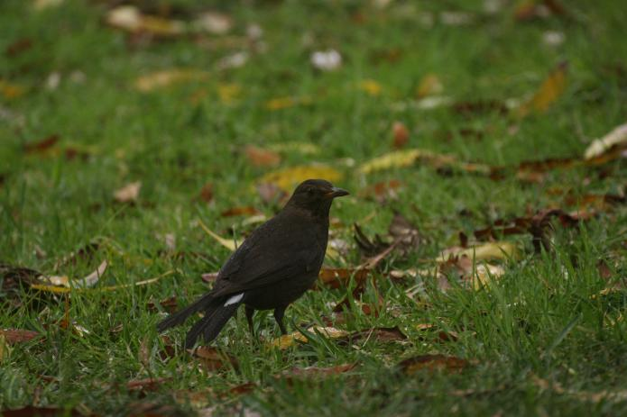
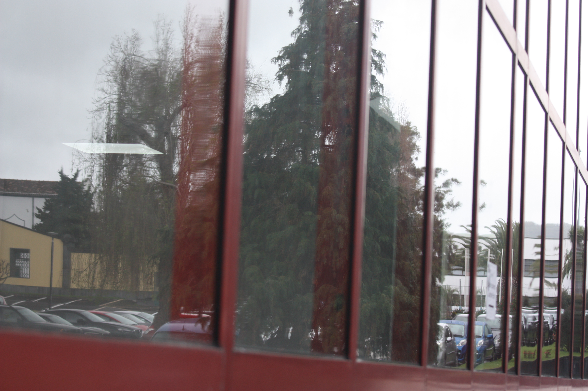
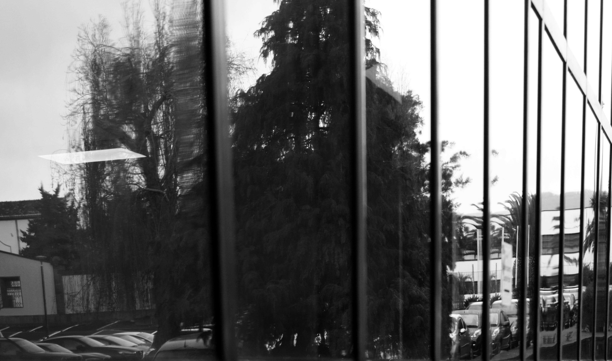
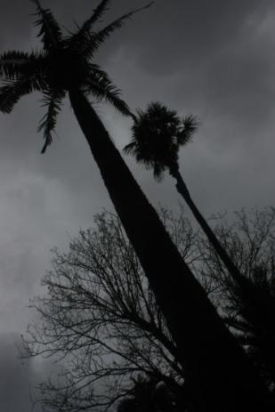
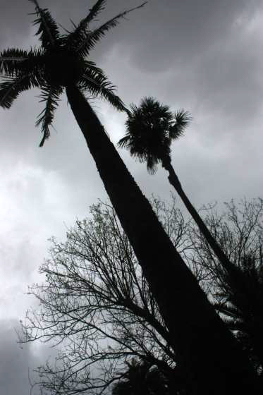

Este site foi realizado com o intuito de conceber o projeto de multimédia do 1º ano da licenciatura de Informática Redes e Multimédia da Universidade dos Açores. Consiste de um portfólio de cinco fotografias tiradas no recinto da Universidade e posteriormente editadas por mim.
Esta é uma fotografia de mim, que foi tirada por um dos meus colegas, no momento perfeito. Todas as outras fotos foram tiradas por mim. Esta é a versão não editada. Foi tirada com uma cãmera de média objetiva.
Esta é a versão editada em photoshop, passei a foto para tons de cinza e desfoquei um pouco as extremidades para focar mais no rosto.
Esta é a foto não editada dum fruto que tirei com uma teleobjetiva.
Aqui mudei os tons da foto para uns tons mais avermelhados como se fosse o pôr do sol. Também clariei um bocado o cacho para não ficar muito escuro. Além disso, também cortei um pouco o lado direito da foto para retirar uma parte que estava a distrair a atenção do olhar do centro da foto.
Este melro foi apanhado por uma teleobjetiva, mas como podem ver a imagem ficou um bocado escura, o dia estava nublado.

Portanto na imagem editada aumentei a claridade da foto especialmente no melro que tava demasiado escuro.
Esta foto foi tirada a pensar no reflexo do vidro assim como no paralelismo das molduras das janelas.
Mais uma vez usei tons de cinza, pois a fota tinha demasiadas cores diferentes e assim ficava melhor. Esta também foi girada ligeiramente para a esquerda.
Esta foto foi obtida com uma objetiva média e tirada do chão para cima obtendo um efeito interessante, no entanto foi tirada apenas uma vez e infelizmente um colega tinha desligado o autozoom o que deixou a imagem com baixa resolução e um pouco termida.
Para tentar salvar esta foto aumentei a luminosidade um bocado por toda a imagem, à exceção das partes completamente pretas.